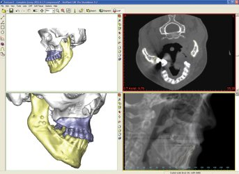
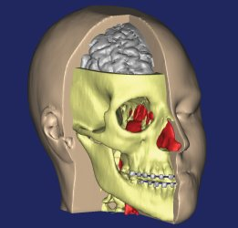
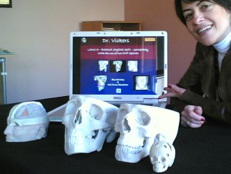

|
1992
yýlýndan bu yana Avrupa, Amerika ve Japonya'da kullanýlan,
iki yýl önce de Türk hekimlerine sunulan Mimics üç boyutlu
yazýlým programýyla, artýk ameliyatlar önce sanal olarak sonra
da hastanýn birebir ölçekli fiziksel modeli üzerinde gerçekleþtirilebiliyor.
Tomografi,
MR, 3 Boyutlu Ultrasonografi gibi farklý görüntüleme tekniklerinin
birleþtirilmesi ile kiþiye özel sert ve yumuþak doku uygulamalarý
ile sanal ameliyatlar, hastanýn birebir ölçekli verileri ile
3 boyutlu katý modelleme ve bu modellerle tüm osteotomi ve
distraksiyonun ameliyat öncesi model üzerinde tatbikatý, kiþiye
özel protez uygulamalarý ile pek çok ana bilim dalýndaki hekimin
üç boyutlu görüntüleme yazýlýmý Mimics'i kullanarak ameliyat
süresini, riskini ve maliyetlerini kayda deðer þekilde azaltmasý
artýk mümkün.
Týp
dünyasýnda yeni bir dönem baþlatan Mimics yazýlým programý
ve Z Corp. 3 boyutlu yazýcýlarýnýn Türkiye distribütörü 4C
Mühendislik þirketinin ortaðý Kutsal Tuaç, "Özellikle
Plastik ve Rekonstrüktif Cerrahi, Diþ Hekimliði, Ortopedi,
Nöroþirurji, hatta kalp ve damar cerrahisi alanýnda doktorlar
Mimics yazýlým programýnda hastanýn tüm verilerini girerek
ilk önce sanal ameliyatlarýný yapabilir, tüm travma, tümör
ya da anevrizma yerleþkelerini tespit edebilirler. Vida,
plak, distraktör yörüngelerininin doðrulanmasý ameliyat öncesi
hasta modeli üzerinde yapýlabilir. Hekimler böylece, hastalarý
için en doðru müdahale yöntemini ameliyat öncesi belirleyebilir.
Doktorlar ameliyatý sanal ortamda ya da hastanýn modeli üzerinde
çalýþtýklarý için gerçek ameliyat süresi kýsalýr. Ameliyatýn
süresi azaldýðý için hasta narkozda daha az kalýr. Hastayý
3. boyutta ameliyat öncesi görselleþtirebilmek ameliyat riskini
azaltýr, çünkü artýk hekim ameliyat esnasýnda sürprizlerle
karþýlaþmayacaktýr. Türkiye'de bu sistemi deneyen hekimler
ameliyat süresinde ciddi bir azalma kaydettiklerinin ve bu
sistemin ameliyatlarýnýn baþarýsýnda önemli bir payý olduðunun
altýný çiziyorlar" dedi.
|

|

|
|
Mimics
ile elde edilmiþ STL model
|
Z
Corp. firmasýna ait 3D Printer cihazlarýyla elde edilmiþ
medikal modeller
|
Sanal
ameliyat sisteminin týpta birçok ana bilim dalýnda kullanýlabileceðini
vurgulayan Tuaç, "Öncelikle, Kranio-Maksillo-Fasiel ve
ortopedi vakalarý, kiþiye özel ya da standart protez uygulamalarý,
ekstra oral implant tasarýmýnda ve uygulamalarýnda bu sistemin
kullanýlmasý hekimlere önemli kazanýmlar saðlamaktadýr.
Hastanýn
tüm doku verileri Mimics programýnda ayrýþtýrýlýp, sanal ve
katý 3 Boyutlu modelleme ameliyat öncesi yapýlabildiði gibi
hastanýn kendi verileriyle ameliyat sonrasý yumuþak doku projeksiyonunu
yapmak da bu sistem içinde mümkündür. Cerrah ameliyat için
risklerini azaltýrken, hastasýnýn ameliyat sonucunu önceden
kendi doku verileriyle görmesini saðlýyor" diye konuþtu.
Mimics
Programýnýn ayrýca týp alanýndaki araþtýrma ve geliþtirme
çalýþmalarýnda kullanýldýðýnýn da altýný çizen Tuaç þunlarý
söyledi:
"Bu
program özellikle hekimlere, mühendislere ve araþtýrmacýlara
yönelik olarak hazýrlanmýþtýr. Mimics programý kullanýlarak
yapýlacak ve týp alanýnda keþif sayýlabilecek tüm yenilikçi
projeler Mimics programýnýn üreticisi Materialise firmasý
tarafýndan her yýl yapýlan bir sempozyumla Dünya'ya tanýtýlýr
ve bu projelere para ödülleri verilir. Bu yýl Türkiye'den
de katýlým bekliyoruz. Doktora öðrencilerine Mimics'i kullanarak
yaptýklarý tez çalýþmalarý için de destek veriyoruz.
Önemle
belirtmek istediðim bir husus da, Z Corp. medikal modelleri
ile týp öðrencileri zor bulunan kadavralar yerine düþük maliyetli
ve kemik dokusuna en yakýn malzeme ile çalýþma fýrsatýný bulabilir.
Bu üç boyutlu modeller kolaylýkla kesilebilir, üzerinde vida
ve diðer metal plaklar uygulanabilir. Bu yöntem pek çok týp
fakültesi için önemli bir maliyeti en aza indirgeyecektir.
Bu
sistem Dünya'da hastanelerde, týp fakültelerinde, hatta klinik
ve muayehanelerde kullanýlýyor. Bu sistemi satýn almak isteyen
hastane ve üniversitelerin Avrupa Birliði fonlarýna da yenilikçi
projelerle baþvurabilirler"
Daha
fazla bilgi için:
www.materialise.com/mimics
> Materialise Mimics
www.zcorp.com
> Z Corp. 3D Printer sistemleri
 Ýrtibat: Ýrtibat:
4C
Mühendislik, Bilgisayar ve Dýþ Tic. Ltd. Þti.
Küçükayasofya Mah. Þehit Mehmet Paþa Yokuþu No:7
34460 Eminönü, Ýstanbul
www.4c.com.tr
Tel: (212) 517 85 59
|